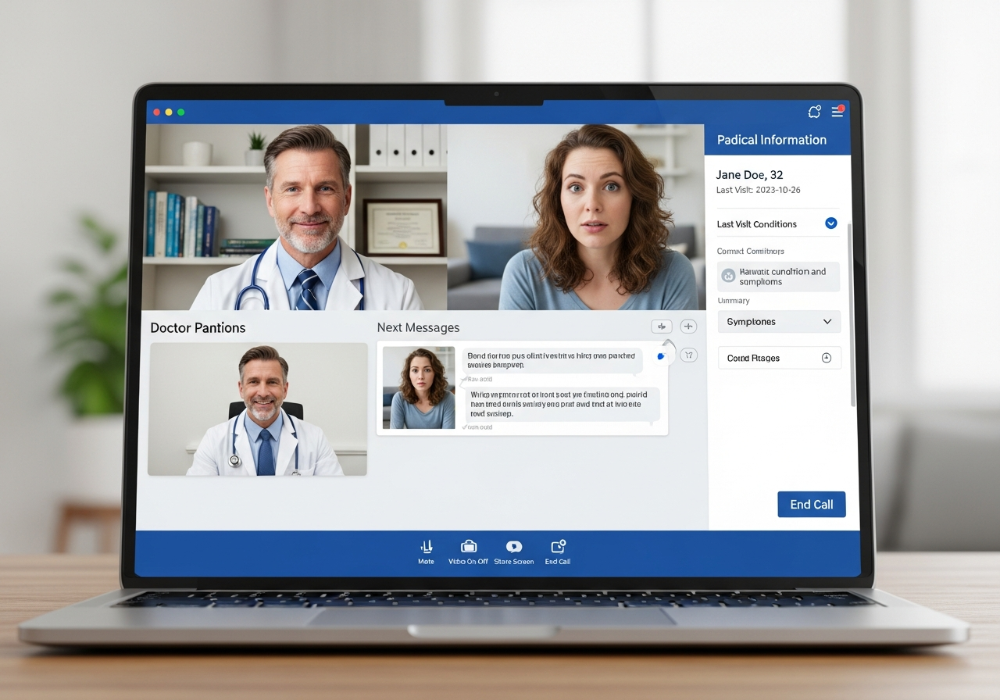
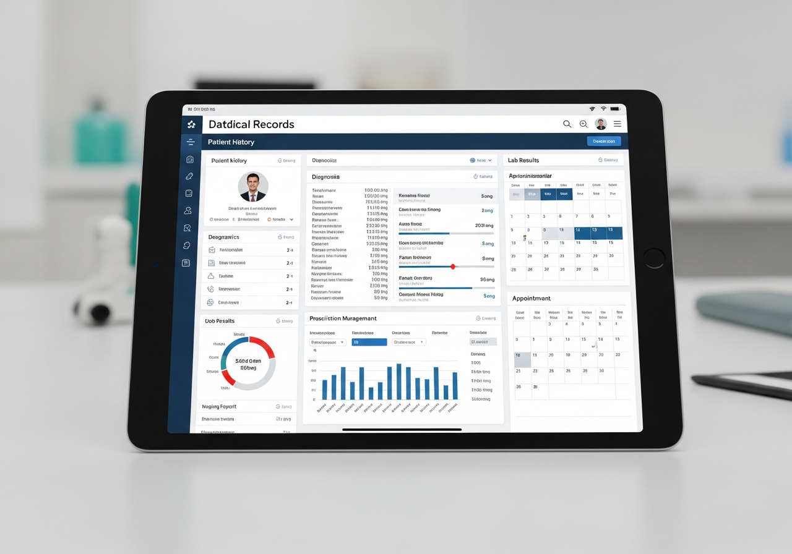
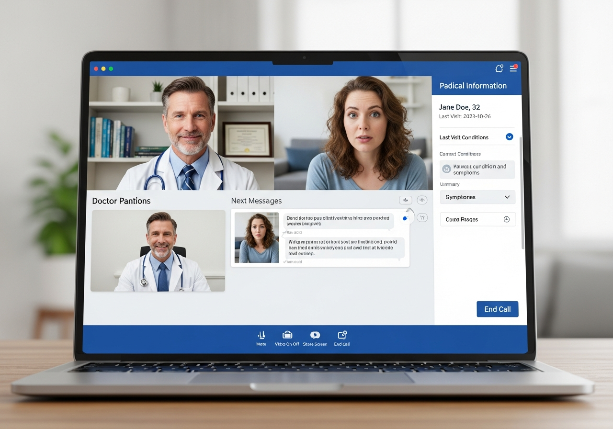
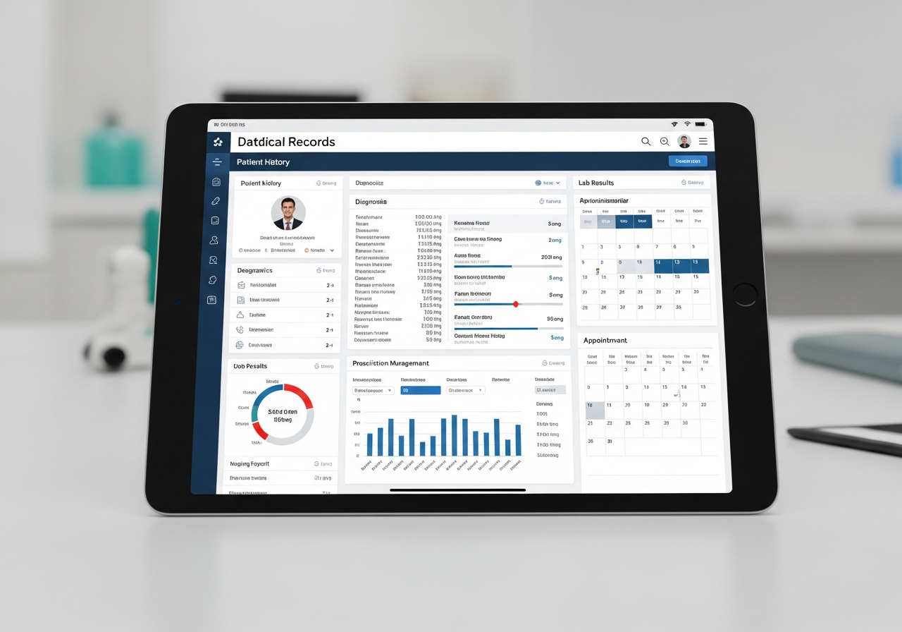

Voltar aos Produtos




Telemedicina Completa
MedConnect - Sistema de Consulta por Vídeo em Tempo Real
A partir de
R$ 95,00 /mês
R$ 260,00 /trimestral
Descrição do Produto
Plataforma completa de telemedicina desenvolvida em Python Flask com Socket.IO e WebRTC, voltada para profissionais de saúde que desejam oferecer consultas online com qualidade e segurança. Sistema profissional com autenticação por perfis, videochamadas em tempo real e gestão completa de pacientes.
O MedConnect foi desenvolvido para atender clínicas, médicos autônomos e plataformas de saúde que precisam de uma solução robusta para telemedicina. Inclui sistema completo de faturamento, gestão de pagamentos, prontuário eletrônico e muito mais.
Funcionalidades Principais:
- Sistema de Autenticação com 3 Perfis (Administrador, Médico, Paciente)
- Videochamadas em Tempo Real com WebRTC
- Salas de Consulta Exclusivas e Dedicadas
- Prontuário Eletrônico Completo
- Registro de Evoluções Médicas
- Sistema de Diagnósticos e Prescrições
- Gestão Completa de Pacientes
- Sistema de Faturamento Automatizado
- Fechamento Mensal com Verificação em Duas Etapas
- Integração com PIX para Pagamentos
- Exportação de Relatórios em Excel
- Dashboard Baseado em Perfis
- Sistema de Fotos de Perfil
- Presença em Tempo Real nas Videochamadas
- Design Responsivo Mobile-First
Diferenciais do Sistema:
- Códigos Únicos de Sala Gerados Automaticamente
- Histórico Completo de Consultas
- Cálculo Automático de Receitas (Médico + Administrador)
- Sistema de Confirmação Dupla para Pagamentos
- Planilhas Excel Formatadas para Processamento de Pagamentos
- Visualização Detalhada de Informações do Paciente
- Finalização de Consultas pelo Médico
- Redefinição de Banco de Dados (Exclusivo Admin)
- Tema Médico Moderno (Azul/Ciano com Efeitos Glass)
Tecnologias e Arquitetura:
Python Flask
Backend robusto e leve
WebRTC
Vídeo/áudio ponto a ponto
Socket.IO
Comunicação em tempo real
SQLite
Armazenamento persistente
Werkzeug
Hash seguro de senhas
Excel Export
Relatórios formatados
PIX Integration
Pagamentos facilitados
Responsive Design
Funciona em todos dispositivos
Solicitar Orçamento
Resposta em até 24 horas
Perguntas Frequentes
Sim! O sistema foi desenvolvido seguindo as melhores práticas de segurança e proteção de dados. Utilizamos hash de senhas com Werkzeug, sessões seguras do Flask e controle de acesso baseado em perfis. Recomendamos sempre consultar um especialista jurídico para adequação completa à LGPD específica do seu negócio.
As videochamadas utilizam WebRTC para streaming de vídeo e áudio ponto a ponto, garantindo baixa latência e alta qualidade. O Socket.IO gerencia a sinalização (troca de informações de conexão) entre os participantes. Utilizamos o servidor STUN público do Google para estabelecer as conexões peer-to-peer.
O administrador configura as taxas de consulta para cada médico. Quando uma consulta ou videochamada é finalizada, o sistema cria automaticamente um registro de faturamento, calculando a receita do médico e do administrador. Ambos têm acesso a dashboards com histórico de faturamento e relatórios detalhados.
O sistema possui um processo de verificação em duas etapas: (1) O administrador gera o fechamento mensal e confirma o pagamento, (2) O médico confirma o recebimento. Todo o histórico fica registrado para auditoria. O sistema também permite exportar planilhas Excel com todos os detalhes para facilitar o processamento de pagamentos via PIX.
Absolutamente! O sistema pode ser customizado com a identidade visual da sua clínica, incluindo logotipo, cores e funcionalidades específicas. Também podemos adicionar integrações personalizadas mediante orçamento adicional, como prontuário eletrônico mais completo, sistema de agendamento, etc.